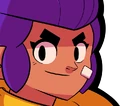
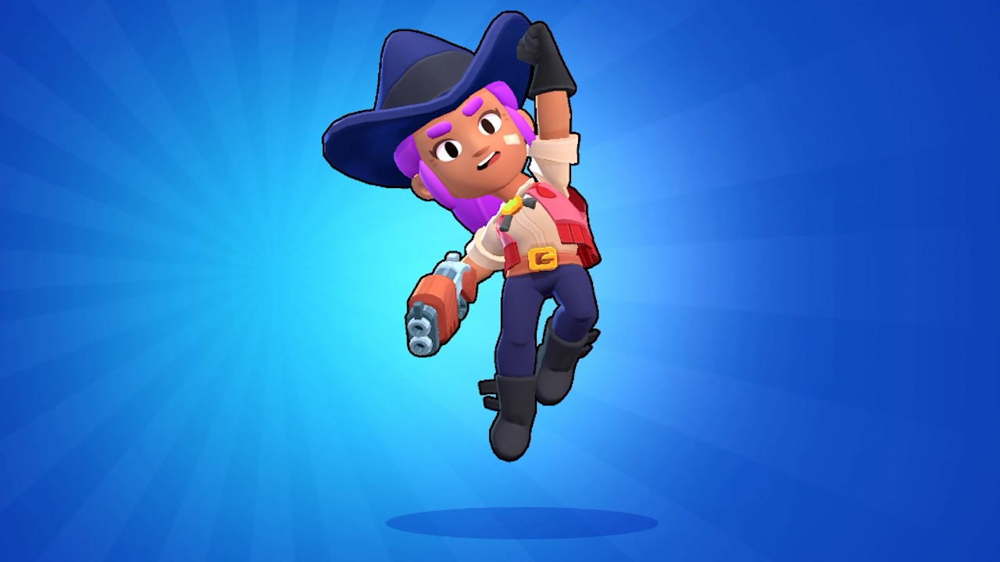

Shelly
Shelly es la guardabosques perfecta: fiable, dura y excelente con su escopeta. Nunca entendió por qué Colt consiguió robarse el protagonismo...

Shelly es una luchadora inicial que se desbloquea al comenzar el juego. Tiene una producción de salud y daño moderada, y una velocidad de movimiento rápida. Su ataque es una ráfaga de proyectiles de escopeta que causan un gran daño de cerca. Su Super derriba a los enemigos supervivientes y destruye obstáculos, causando de manera similar un gran daño de cerca. Su primer gadget, Fast Forward, le permite lanzar algunas fichas en la dirección hacia la que mira. Su segundo artilugio, Clay Pigeons, reduce el ancho y aumenta el alcance de sus ataques durante los siguientes 5 segundos. Su primer Star Power, Shell Shock, hace que su Super ralentice momentáneamente a los enemigos. Su segundo Star Power, Band-Aid, le da una barra que se carga con el tiempo y, cuando está completamente cargada, la cura cuando su salud cae por debajo del 40%. Su Hypercharge, Double Barrel, aumenta la propagación y la cantidad de proyectiles que dispara su Super.
Ataque: perdigones
"El boomstick de Shelly dispara una amplia gama de perdigones a una distancia media. Cuantos más perdigones golpeen, mayor será el daño".
Shelly dispara una ráfaga de proyectiles que causan un daño bastante bajo por sí solos, pero que pueden causar mucho juntos. El ataque causa más daño a corta distancia ya que más proyectiles golpearán al enemigo, pero el alcance de su ataque es bastante largo, lo que le permite cargar su Super desde lejos sin correr el riesgo de una posible derrota. Este ataque le permite a Shelly sobresalir en el combate cuerpo a cuerpo, especialmente contra Brawlers con poca salud y/o ataques de corto alcance.
Súper: Súper caparazón
"El Super Shell de Shelly destruye tanto la cobertura como a los enemigos. Los supervivientes son rechazados".
Shelly's Super dispara una ráfaga dañina de proyectiles que no sólo pueden destruir obstáculos sino también derribar a los enemigos. Al igual que su ataque principal, los proyectiles se extienden y causan un daño masivo a corta distancia. Tenga en cuenta que los proyectiles destruyen las paredes, pero no las atraviesan, por lo que desaparecen al destruir un azulejo de la pared.
